Mood Disorder Guide

1. What Kind of Illness Is a Mood Disorder?
Mood disorders are commonly known as depression and manic depression. Depression mainly appears as a low mood together with a loss of interest and motivation, negative thoughts, slowed thinking and movement, and changes in eating and sleeping. Manic depression has been called by that name because the ‘mania/hypomania’ state, in which the mood is elevated and excited, and the ‘depression’ state, in which the mood sinks, appear in alternation. Doctors then gave the illness the name bipolar disorder, because the mood in this illness shows two poles, up and down.
However, it is becoming increasingly clear that depression and bipolar disorder (manic depression) are not completely separate illnesses, but rather illnesses within the same group of mood disorders that differ in how strongly they lean toward depression or toward bipolar disorder (a spectrum). In other words, some conditions lean strongly toward depression, such as typical depression; some lean strongly toward manic depression, such as bipolar I disorder; and in between are bipolar spectrum disorder and bipolar II disorder, depending on the proportion of depressive and manic-depressive tendencies. In particular, it is known that people living with bipolar disorder experience depression far more often than mania or hypomania, and that the periods they suffer from depression are much longer than those of mania or hypomania. In fact, when we take another look at patients who had been treated for a long time for recurrent depression without much improvement, it is quite common to find that the diagnosis was not simple depression but manic depression, and that they improved with specialized treatment for manic depression.
Depressed periods only
No hypomanic/manic periods. Depressed periods are mostly clearly distinguishable
<Depression>
Mood: Depressed and loses interest
Thinking: Thinking slows down and talking decreases. Movements become sluggish and concentration drops. Negative thoughts (guilt, worthlessness, suicidal thoughts, etc.) increase
Motivation: Motivation, interest and enjoyment decrease. Drives (sleep, appetite, sexual desire, etc.) decrease.
Sleeping far too much, or suffering from severe insomnia
Depressed periods + mood swings
No hypomanic/manic periods
<Cyclothymic disorder, etc.>
Mood: Up and down. It can look like the person’s natural personality. Even when depressed, the mood may lift at good news. The mood is not elevated to the level of hypomania, but may be briefly elevated for a day or two. Most of the time, however, the person is depressed
Thinking: Thinking also goes back and forth. Thoughts may speed up at times and slow down at others, and may be positive at times and negative at others
Motivation: Motivation decreases. The person may force themselves to feel motivated. At times motivation increases. They often cannot sleep, but sometimes they sleep a great deal all at once
Depressed periods + brief elevated periods (+ mood swings)
Mostly depressed. Depression comes with hypomania like that described below. The hypomanic periods can be very brief
<Hypomania>
Mood: Up and down. There are clearly distinguishable elevated periods lasting 4 days or more
Thinking: Thinking speeds up and ideas increase. Sometimes the ideas are odd. The person talks more, and thinking and movement may both speed up
Motivation: Plans multiply. Spending increases and the person meets people often. Sleep, appetite and sexual desire may change
Mania severe enough to seriously disrupt daily life.
Depressed periods may come before or after it, or occur at the same time
<Mania>
Mood: Elevated and happy, or instead easily excited and irritable. Lasts a week or more
Thinking: Fast. Thoughts follow one after another without stopping. Excessive self-confidence. Thoughts change often. The person connects things together too much. At times delusions may accompany it.
Motivation: Starts many things at once. Does not feel tired even without sleep. Changes in appetite and sexual desire. Reckless behavior, heavy spending or investing
Delusions or hallucinations may accompany it.
* Even if there are only depressive symptoms, bipolar disorder should be suspected if any of the following features are present *
- A personality prone to mood swings, or a hot-tempered personality
- Marked mood changes with the seasons or with the menstrual cycle
- Depression that began at a young age, or several depressive episodes with frequent relapses
- A history of postpartum depression
- Little effect even with sufficient doses of antidepressants, or an effect only at the beginning
- A history of self-harm or a suicide attempt
- Being sensitive in relationships and easily hurt by other people
- Accompanying binge eating, alcohol or gambling problems, or a personality disorder
A mood disorder is not an illness of the mood alone. It is an illness in which mood, thinking, motivation and sensation all change together. It is not only that the mood is depressed; it can appear in very many ways depending on how strongly there is a manic-depressive tendency. Mood disorders have a wide range of symptoms, and because mild forms of the symptoms are present even before the illness fully begins, they are often not accepted as an illness but are thought of as personality, as if the person had always been that way.
2. Symptoms of Mood Disorders
1) What is an episode in a mood disorder?
People with a mood disorder go through depressed periods and elevated periods. A period when depressive symptoms stand out is called a depressive episode, and a period when elevated symptoms stand out is called a manic/hypomanic episode. Understanding the characteristics of each episode is quite important for understanding the illness. In people whose moods do not normally swing much, these episodes are clearly separated, but in people with marked mood swings, the episodes may not be clearly divided.
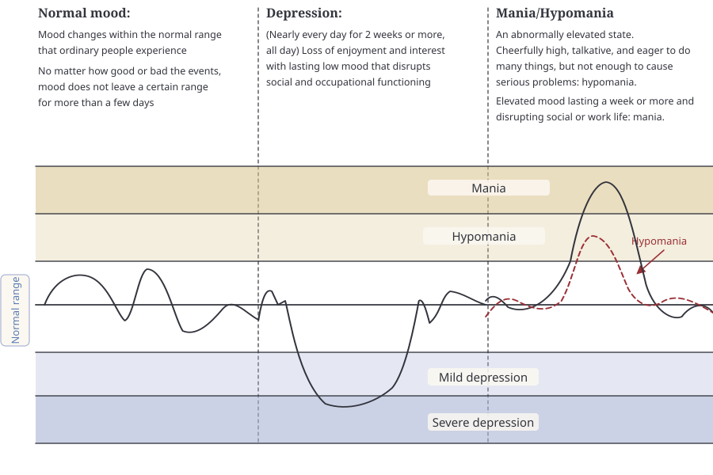
(1) Depressive episode
A depressive episode is a period when the mood is low and interest drops. You are depressed almost every day, and even things you usually enjoy are no longer enjoyable. Your weight may drop or rise a great deal. Almost every day you may be unable to sleep, or may sleep too much. Your body feels unusually sluggish compared with usual, and you suffer from a sense of powerlessness. You may be overwhelmed by thoughts that you are worthless, by guilt, and by thoughts of wanting to die. You are indecisive, your head feels foggy, and you cannot concentrate on work.
(2) Manic episode
A manic episode is a period when the mood is abnormally up and you are overflowing with energy. You are full of confidence and may have grandiose delusions. You feel you are not tired even without sleep. You talk more, or feel an urge to keep talking without a break. Your thoughts race and jump frantically from one idea to another. Your concentration drops and even small stimuli affect you. Goal-directed activities increase, and sexual desire and physical movement noticeably increase. You tend to become excessively absorbed in risky and self-destructive behavior. Examples include reckless sexual relations, shopping addiction, and aggressive investments or plans. People with a mood disorder often cannot remember well what happened during a severe manic episode.
(3) Hypomanic episode
A hypomanic episode is a period when the symptoms of a manic episode appear in a mild form. It does not lead to serious relationship problems or to extremely dangerous behavior. You may even spend a more productive period, and at times you may even seem more attractive to others. For that reason, people often remember it themselves as a good time.
Hypomanic periods are short, and because most patients do not have difficulty in daily life during them, it may be hard to remember the hypomania they have experienced over the years. On the next page, “the Korean Bipolar Spectrum Diagnostic Scale (K-BSDS) can help you check whether you have a tendency toward bipolar disorder. Please try it yourself.
(4) Mixed episode
This is a period that has the characteristics of both a depressive episode and a manic episode. Because the mood changes over a wide range, the patient has a lot of difficulty, and because depressive symptoms and manic symptoms have to be managed together, more careful treatment and more patience are needed.
2) Symptoms of mood disorders
(1) Difficulty regulating mood: With a normal mood, even when something good or bad happens, you feel good or bad for a few days, and the mood does not go beyond a certain range for more than a few days. In depression, however, you can be depressed for weeks or months over something that would make others depressed for a day, and you can also become depressed for no particular reason. People express feeling depressed in very different ways. They say, ‘My mood is down,’ ‘I feel stifled,’ ‘My chest feels blocked,’ ‘I don’t want to do anything,’ ‘Everything is a bother,’ ‘I have become sensitive,’ ‘I have become more irritable,’ or ‘I have become more angry.’ In other words, becoming irritable, even exploding in anger, over things that others can put up with, becoming more sensitive than others, and becoming sensitive to changes in the surroundings are all signs related to a mood disorder.
In a manic/hypomanic state, it can also show up as an elevated mood. The elevated mood can sometimes last a week or more, or even several months. At other times it may appear only very briefly, for a few days. It does not happen only when something good happens; people may also become elevated while trying hard to overcome a difficulty. You may not feel your own mood being elevated, and may even think that your depression has gone away, that you have found yourself again, or that you have changed your personality through effort, but to other people you may seem unlike your usual self and inappropriate. When a slightly elevated state appears, work seems to go well and you seem to have improved, but in most cases the state cannot be kept up, and you become excessively elevated, your mood swings become severe, or you fall into severe depression.
- Korean Bipolar Spectrum Diagnostic Scale (K-BSDS) -
Read the following sentences carefully, and mark O or X for whether what each sentence describes is similar to you
- ① Some people notice that, from time to time, their mood or energy level clearly changes.
- ② These people know that there are times when their mood or energy is somewhat lower than usual and times when their mood or energy is somewhat higher than usual.
- ③ When their mood or energy goes down, they usually feel they have no strength, so they spend more time lying down or sleeping than usual, put off things they should do or lose motivation.
- ④ So, they often gain weight during these times.
- ⑤ And during these times, people often feel “depressed” or say they are depressed.
- ⑥ Sometimes, during these times, they may feel hopeless or have thoughts of wanting to die,
- ⑦ and their ability to handle work and daily life at work or at home may decline.
- ⑧ These “down periods” usually last a few weeks, but in some cases may last only a few days.
- ⑨ These people also have “usual mood periods,” when their mood or energy is as usual and they have no particular trouble handling work and daily life at work or at home.
- ⑩ That is why they can notice the change in mood between the “usual mood periods” and the “down periods”.
- ⑪ There are times when their energy increases above the “usual periods” mentioned above, and during these times they may do many things they could not do when they were as usual,
- ⑫ and sometimes, during these “up periods,” they may feel that they have too much energy or more than they can handle.
- ⑬ In the “up periods,” some people may feel that they are on edge, irritable or aggressive,
- ⑭ and some people do many things at once during these times.
- ⑮ Some people spend a lot of money during these times and get into trouble because of it.
- ⑯ During these times they talk more than usual, become more outgoing, or have increased interest in sex.
- ⑰ Sometimes, the behavior that appears during these times may cause discomfort to other people or make them come across as someone different from their usual self,
- ⑱ during these times they may have trouble working with colleagues, or may cause trouble and end up at the police station,
- ⑲ and they may misuse alcohol or non-prescription drugs.
Then, after reading the above, mark the option below that applies to you,
(For each of the 19 items above, an O mark is 1 point and an X mark is 0 points. Add the score of the last question to the total for the 19 items, and the result can be interpreted as follows: “6 points or less – the likelihood of bipolar disorder is very low; 7–12 points – low; 13–19 – possible; 20 points or more – very high.” However, a simple questionnaire cannot replace a doctor’s diagnosis.)
There are also people in whom these depressive and manic/hypomanic periods appear clearly separated, and between them they live with a normal mood, without depression or mania/hypomania. Some people, however, do not have clearly separated depressive and manic/hypomanic periods, and mood symptoms continue even in between. In these people, depressive symptoms or an elevated mood appear in a mild form even between depression and mania/hypomania, and irritability and anxiety caused by the mood changes appear together. So instead of thinking that they have a mood disorder, they may mistake it for having a moody, changeable personality or a personality that is easily hurt. Also, some people have no severe depressive periods but have mild depression that is always present, and they may describe themselves as ‘I have always been depressed since I was young’ or ‘I am a depressed person by nature.’ As emotional reactivity that goes with these moods, they may feel fear, timidity, worry and anxiety. It becomes harder than usual to speak up in front of people, and you become anxious even over small matters. Irritability and anger arise, so you may get very angry or act violently, and conflicts arise even over small matters. This emotional reactivity can appear both when you are depressed and when you are elevated.
2) Changes in motivation: Even for things you would usually enjoy and be good at, they are no longer enjoyable, and you become indifferent. Everything is a bother, you do not feel like working, and you gradually put off what you have to do. It is not easy to make an appointment with even one person and meet them, and no plans may come to mind. As a result, students’ grades drop, working people may hear bad things about their evaluation at work or in their relationships, and parents may fail to take proper care of their children. At other times, however, you become interested in even small things, everything is fun and exciting. You gain confidence that everything you do will go well, and you may finish a backlog of work in an instant. You feel that you can do even the things you would normally skip because they are a bother, so you make various plans, make several appointments, spend far too much, and make high-risk investments. Because these things were not done calmly and after careful thought, problems often arise later, and in many cases you become listless again.
Your desire for sleep, appetite and sexual desire may also change. The direction of the change can differ from person to person. For example, when depressed some people lose their appetite, while others gain appetite. This is also why some people cannot sleep and others sleep too much. When depressed, some people develop insomnia, while others only want to sleep. When depressed, you come to feel that your sexual desire or sexual function has declined. On the other hand, in elevated periods you may not feel hungry even if you do not eat, and you may not feel tired even if you do not sleep. Sexual desire may also become heightened, so you may enter into relationships with the opposite sex that are unlike your usual self.
3) Thinking and cognitive function: At times your thinking slows down, your concentration drops and your head goes blank. You may even feel as if you had become stupid. Even when you read a book, nothing stays in your mind; you cannot follow TV or films well; and you cannot quickly understand conversations with people around you. At other times your thinking speeds up, thoughts come one after another by association, your head seems to work well, and ideas come easily. Sometimes negative thoughts chain together and reach extreme conclusions, and sometimes there are too many positive thoughts and you are full of confidence without any basis. Along with these changes in thinking, you may talk more or write a lot. Rarely, obsessive thoughts increase.
When thinking goes too far, ‘ideas of reference’ can appear, and further, it can reach ‘delusions.’ An idea of reference is ‘thinking that things that actually have nothing to do with you are related to you.’ These thoughts may link with one another and lead to delusions. Common delusional contents include “I am causing harm to other people,” “Other people seem to recognize me / seem to be signaling to me,” “I seem to have become an important person,” “People are watching me,” “People seem to know my thoughts,” and “People seem to be interested in me.” When these symptoms are severe, it can sometimes be hard to tell them apart from schizophrenia.
4) Changes in sensation: Along with mood changes, pain from an illness you already had may become worse. Changes in sensation such as chest tightness, a burning feeling like hwabyung (anger-related illness), a feeling of heat, flushing, dizziness, hyperventilation and panic attacks are also symptoms that commonly accompany mood disorders. When the illness is severe, in addition to delusions you may sometimes hear or see things that are not there (hallucinations).
3. How Mood Changes Over Time
1) Typical depression
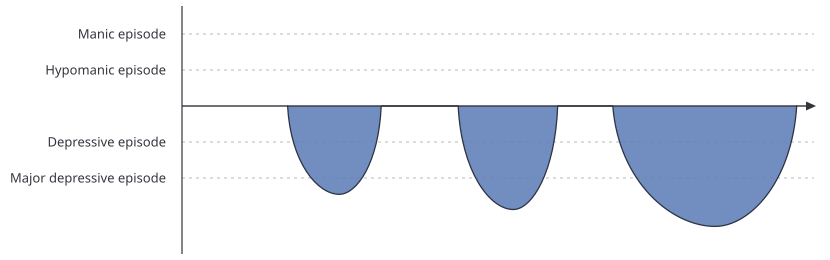
Only depression appears, without mania or hypomania. It is common in mood disorders that begin in middle age or later rather than at a young age. Compared with patients who have a strong bipolar tendency, relapses are less frequent, the periods between depressive episodes are relatively stable, and you do not feel large mood swings. It also tends to respond well to antidepressant treatment. Once you have experienced depression, relapse is so common that, without treatment, at least half of people experience depression again within a year, and without proper treatment the risk of developing dementia can also increase.
2) Bipolar I disorder
① Bipolar I disorder with clearly separated episodes
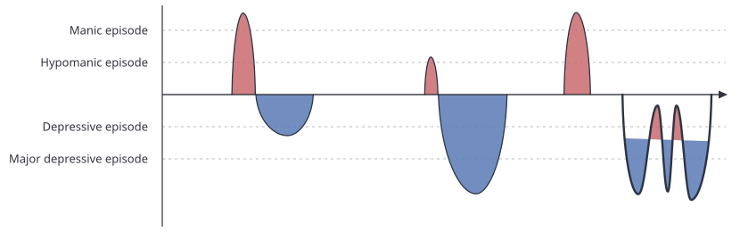
These are patients who have distinct manic periods. During manic periods, hospitalization is often necessary. It usually occurs once every 1–2 years or every several years, but in severe cases it can occur several times a year. There are also depressive periods, but compared with bipolar II disorder, the mood does not change much in the intervals between episodes, and the depressive periods tend to be short. It may also appear in the pattern of agitated depression, described later. However, relapses are frequent, and the more relapses are repeated, the more easily relapse recurs. Some cases start with depression, and some start with mania first. Rarely, it appears as mania alone, without depression. Psychotic symptoms such as hallucinations or delusions may accompany it, and in such cases it can sometimes be hard to tell apart from schizophrenia. What the internet and psychiatry textbooks of the past usually describe when they explain manic depression is precisely this type.
② Bipolar I disorder with episodes that are not clearly separated and with mood swings
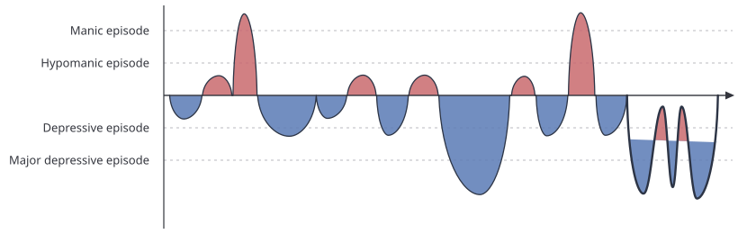
In some patients with bipolar I disorder, the periods between episodes are not clear, and mood swings continue. That is, the diagnosis is bipolar I disorder because of manic episodes, but the person also has the characteristics of bipolar II disorder with marked mood swings. They often have the difficulties of bipolar II disorder, described below, as well. In this case, more consistent treatment and management are needed. If these patients also have psychotic symptoms such as hallucinations or delusions, it may be hard to tell them apart from schizophrenia.
3) Bipolar II disorder
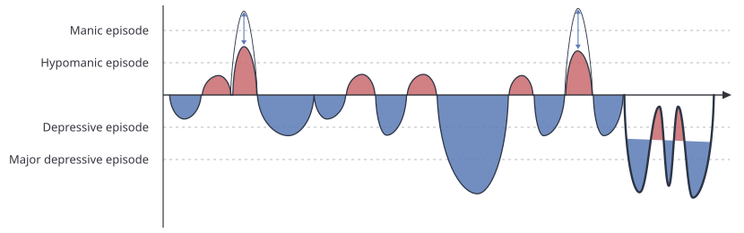
Patients of this type have no manic periods, but they have hypomanic episodes and major depressive episodes. It usually occurs several times a year, but most of the time is spent depressed and the hypomanic periods pass by so briefly that they are often not recognized. For that reason, it is easy to be diagnosed with simple depression or a personality problem. However, it is harder to treat than simple depression, repeated self-harm or suicide attempts are common, and many people also have a variety of other psychiatric conditions such as panic disorder, eating disorders, obsessive-compulsive disorder, post-traumatic stress disorder, personality disorders and alcohol problems, so more careful treatment is needed.
Because these patients have had mood swings since they were young, they often do not properly recognize their own mood state. Also, if they do not receive a proper diagnosis and take only antidepressants, the mood cycle may speed up or hypomania may be triggered, and treatment may gradually become more difficult. During hypomanic periods some people feel good subjectively, but in the end it creates an imbalance of mood and energy, and depression follows for a period at least 3 times as long as the hypomania. It is known that in some cases the period of depression is up to 30 times longer than the period of hypomania. Because the range of mood is wider than in ordinary depression, people feel it as subjectively harder, and the risk of impulsive behavior can also be high. In many cases, they also have the characteristics of mood swings, as in cyclothymic disorder below.
4) Cyclothymic disorder
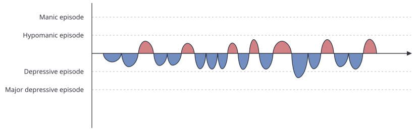
It can be described as one kind of bipolar spectrum disorder. There is continuous mood instability. Periods of mild depression and periods of mild mood elevation appear frequently. Because the mood is up and down, the person can be mistaken for someone with a changeable personality, a personality that is easily hurt, or large emotional ups and downs. This type is an illness that is easy to miss, even for a psychiatrist, unless the doctor specializes in mood disorders. This is because the illness appears mainly as depressive symptoms, so unless the possibility of manic depression is evaluated in detail, it is easily misdiagnosed as simple depression or a personality problem. In depression that begins in adolescence or in the 20s, that is, early-onset depression, recurrent depression, or depression with marked mood swings, you must consider the possibility that cyclothymic disorder was present before.
5) Depression with mood swings but without manic/hypomanic episodes
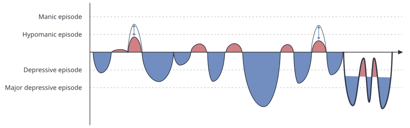
This resembles bipolar II disorder in that the mood swings are marked and there are many depressed periods, but the person does not have as much energy as people with bipolar II disorder, so hypomanic episodes are not clearly visible. Many of these people receive treatment for simple depression without getting better, and after a long time a good number are eventually diagnosed with bipolar disorder. Also, in many cases the person is not diagnosed with a mood disorder, but the problem is thought of as one of personality only, and the person may be diagnosed with borderline personality disorder. The hypomanic periods are simply not easy to detect; the person has almost all of the characteristics of bipolar II disorder. In fact, the risk of self-harm and suicidal thoughts is often higher than in bipolar disorder. When major depression occurs in a person with a cyclothymic temperament, treatment along the lines of bipolar disorder is needed; in such cases, even when elevated, the person is sensitive and shows impulsive behavior rather than feeling good, and this is sometimes called ‘dark hypomania.’
6) Agitated depression
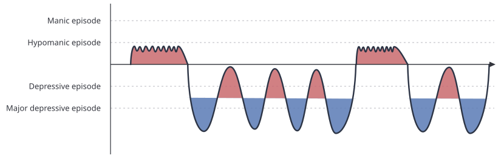
Agitated depression is depression in which restlessness and anxiety stand out more than low mood and loss of motivation. These people are not people who originally had mood swings. On the contrary, before developing agitated depression, many were more lively, bright and diligent people. However, after a major stress, they repeatedly tried to quickly return to their original selves by forcing their mood up, and when that did not work, the cycle repeated, leaving them with temporarily severe mood swings. In that respect, it is not bipolar disorder, but it has many similarities to bipolar disorder. You feel restless and tense, and at times talk excessively. Thoughts do not stop in your head, you feel agitated, your mood swings are severe, and you may cry often. You may find it hard to fall asleep because you are caught up in many thoughts. Some people have thoughts of suicide, and in Korea it is also common for it to appear as chest tightness like hwabyung (anger-related illness) and as various kinds of pain. In this case, some patients do not easily get better with antidepressants or tranquilizers, and may need a mood stabilizer or an antipsychotic. An impatient wish to get better quickly often makes the symptoms worse. For reference, this pattern also commonly appears during depressive episodes in patients with bipolar disorder.
7) Depression accompanying persistent depressive disorder (double depression)
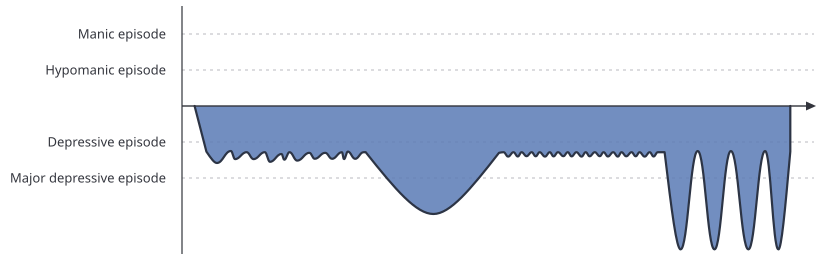
Double depression refers to a case in which severe depression appears in a person who originally had mild depression. It is the case of a person who has had depressed feelings continuing since long ago, with little self-confidence, low self-esteem, no motivation, little sociability and many negative thoughts, and who then develops severe depression on top of that. These patients feel that they have never had a good mood and have always been depressed, and because they have experienced symptoms for such a long time, they easily think it is not an illness but their personality. Even in this kind of depression, treatment with simple antidepressants is difficult, and it is known that lithium, one of the mood stabilizers, can be effective. In some of these people, emotional ups and downs that had been hidden during the long depressed period appear during treatment.
8) Other courses of mood disorders
Mood disorders can have a great variety of courses: a case that continues like depression and then suddenly shows mania and turns out to be bipolar disorder; a case in which, even after long treatment for depression, symptoms continue without getting better; a case in which, during a mood episode, the mood symptoms are not clear and only changes in thinking, motivation and sensation stand out; and a case in which the person has more difficulty with accompanying panic attacks, obsessive symptoms, pain or concentration problems than with the mood symptoms.
4. Causes of Mood Disorders
1) Structural problems of the brain
① A problem in the mood regulation circuit
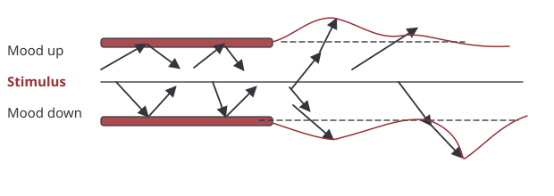
A mood disorder is a biological illness in which, apart from environmental factors, constitutional factors account for 50–60%. The brain has a mood regulation circuit that regulates mood. This circuit not only lets you experience an appropriate mood according to the type of stimulus but also lets you feel the mood to an appropriate degree; when this mood regulation circuit becomes loose, the mood goes beyond the normal range and becomes excessively elevated or depressed.
② An imbalance of mood and energy caused by abnormal increases or decreases in the activity of brain nerve cells or in neurotransmitters
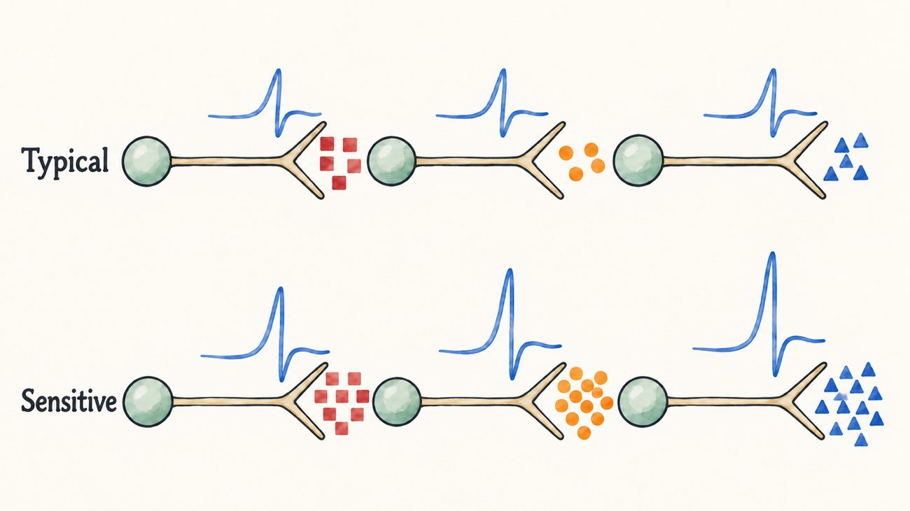
Neurotransmitters that regulate mood and energy are balanced in the brain, and they regulate mood, energy and motivation. When the balance of these neurotransmitters is broken, it causes an imbalance of mood and energy, and a mood disorder develops. In addition, the immune system and brain neurotransmission proteins are known to be involved in the onset of the illness.
2) Factors that affect the activity of nerve cells and neurotransmitters
① Hormonal changes: Mood disorders easily appear for the first time or relapse during periods of marked hormonal change, such as puberty, pregnancy, after childbirth and menopause.
② Sunlight: Sunlight affects the production of melatonin, which regulates sleep, and serotonin, which regulates mood. The fact that relapses in patients with mood disorders are more frequent in early spring and late autumn is related to the sudden change in the amount of sunlight. When sunlight decreases, the mood can become depressed, but conversely, when you get a lot of sunlight, or when you receive light therapy, which replaces sunlight artificially, your mood and motivation can improve.
(The Mood Disorder Clinic at Seoul National University Bundang Hospital is researching these genetic factors and changes in brain activity. If you wish to take part in genetic studies, brain wave studies, brain imaging studies and so on, please talk with your doctor.)
3) Psychological and social factors
A strong sense of pride or a perfectionistic personality, stress in relationships, sudden shocks (resignation from a job, bereavement, bankruptcy, etc.), and other chronic stress can affect the onset and relapse of mood disorder symptoms. When there is originally a temperament that is prone to developing a mood disorder, psychological and social factors can cause the illness to develop.
5. Mood Disorders, Temperament and Personality
Temperament refers to the overall emotional characteristics a person has, and it has a consistent influence on thoughts, emotions, cognition, behavior and relationships with other people. Innate temperament is generally known to remain throughout life, but it can also be influenced by environmental factors such as the way a person was raised. There are research results showing that the rate of developing a mood disorder is higher in people with certain temperaments, and there are also cases in which something known only as a temperament problem turns out to be a mood disorder after a psychiatrist’s examination.
Even with the same mood disorder diagnosis, the symptoms that appear can differ depending on temperament. In people with a temperament in which mood regulation is difficult, emotional instability makes them sensitive to rejection and criticism, emotionally highly dependent on others, strongly jealous, and strongly eager to please other people. Their attitude toward themselves also changes greatly, so at some times they feel confident, and at other times they feel like a person with no worth at all. Impulsive binge drinking and binge eating may be repeated, and the risk of substance misuse is high.
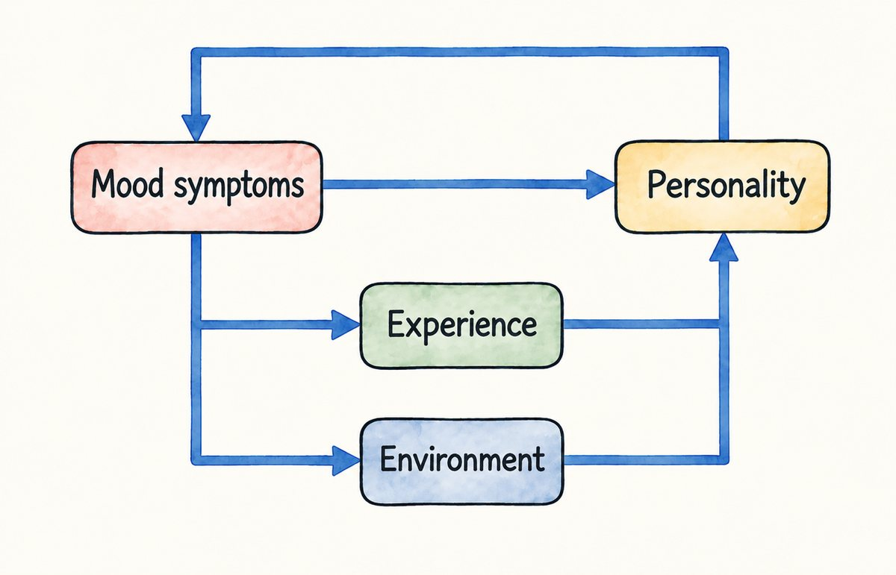
The symptoms of a mood disorder can harden into something like personality over a long time. This is especially so when a person has had a mood disorder since childhood. For example, when you approach people easily during elevated periods and then build up experiences of becoming depressed over small stimuli such as rejection, you become a person who is sensitive in relationships, it becomes hard to trust people, and you may end up living in an environment where relationships are limited. This environment shapes your personality, and that personality can in turn worsen the mood disorder.
As another example, during elevated periods you may expect an ideal image of yourself, and when you become depressed you feel frustrated that you are so different from that ideal image and become timid; you may also become confident without any basis, or become a person who clings excessively to the ideal image you have of yourself. In this way, mood disorders and personality are closely related. Even if you receive medication and your mood symptoms improve, a personality in which the effects of the symptoms have built up over time may not change easily. It takes a lot of time for personality problems to improve, and counseling therapy may also be needed alongside.
6. Treatment and Course of Mood Disorders
1) Does a mood disorder really have to be treated?
A mood disorder must be treated. This is because, if it is not treated, mood regulation becomes more and more difficult. Depression may improve to some extent over time even without treatment, but in almost all cases you become depressed again, and the more relapses are repeated, the more the number of times you are depressed gradually increases and the depressed periods may get longer. In the end, if you do not receive treatment now, you will go through greater difficulty later and receive harder treatment for a longer time.
2) The general course of treatment
Even if you start treatment, the symptoms do not disappear in an instant. Because these are symptoms that have appeared over a long time, they get better steadily, little by little, but if you are patient and do not give up, you can certainly get better.
You may go through several relapses during treatment, but the frequency of relapse gradually decreases compared with before treatment. Even when you are depressed, you may be less depressed than before and depressed for a shorter time. Once you go through this process, all the symptoms recover and you return to how you were before the illness made life hard.
As the mood changes decrease, you may feel that the elevated state has decreased and your emotions have become dulled, that you have no motivation, or that you feel slightly depressed. The more you adapt to your calmer emotions and the more the medication is adjusted appropriately for each period, the more comfortable a state you can reach.
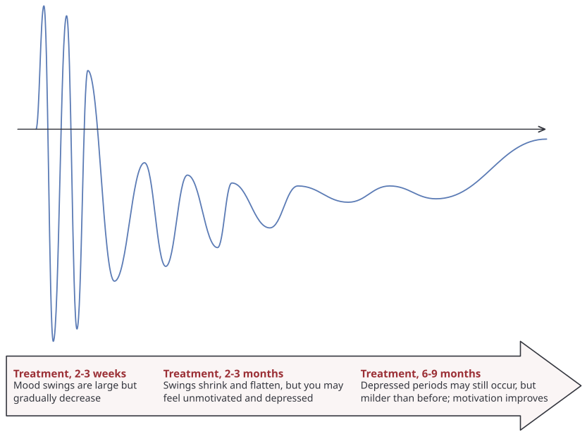
- After 2–3 weeks: The medication causes neurobiological changes in the brain, and only then do you begin to get better. That is, even if you take the medication, in many cases you do not improve within 2–3 weeks.
- After 2–3 months: Symptoms improve noticeably. You may feel that you have no motivation, and you may even feel that is depressing, but the range of your mood narrows and you feel stable.
- After 6–9 months: You become quite stable, but mild symptoms may remain. Even if you keep receiving treatment and managing your daily life, you may sometimes feel difficulty, but it does not become as severe as before.
- After 1–2 years: You improve to the point where you think you have gotten better.
3) Problems if a mood disorder is not treated
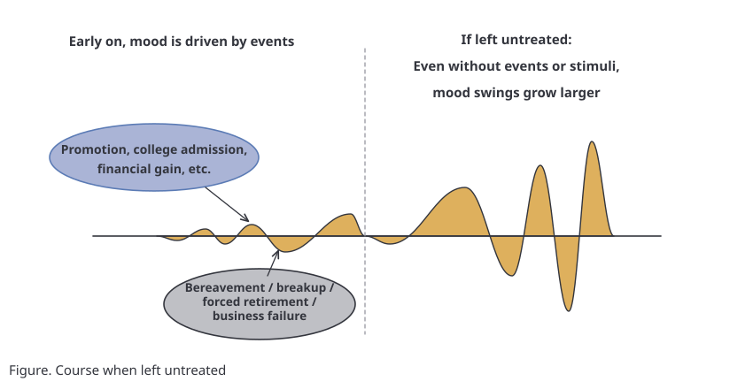
- ① Treatment becomes more difficult: It is very important to detect a mood disorder early and treat it early. The longer and more severe the illness, the longer the treatment may take. Also, if relapses are repeated, a medication that worked in the early stage of the illness may become less effective later.
- ② Relationship problems: When your mood is depressed, it is hard to meet people and you are easily hurt in relationships, but conversely, when your mood is elevated, you may push yourself forward inappropriately or overdo things out of excessive confidence. When these problems repeat, your social skills decline and you are misunderstood as a lazy or capricious person.
- ③ Damage to cognitive function: The longer you suffer from the illness because of frequent relapses, the more the nerve cells that make up the mood regulation circuit are damaged; in particular, cells related to cognitive function are affected, and memory may decline. Contrary to a common misunderstanding, it is not depression medication but depression itself that is a risk factor for dementia. Treating depression instead helps prevent progression to dementia.
4) The importance of maintenance treatment
Without maintenance treatment, most people relapse, and the more relapses are repeated, the longer the treatment period becomes. In other words, the more you try to force a reduction or stop of the medication, the longer you end up taking it.
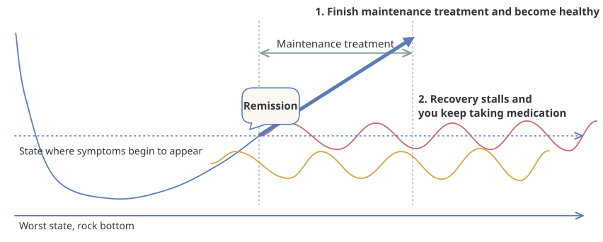
Many patients wonder how long they must receive treatment. But to set the treatment period, you must first reach a symptom-free state (remission). If you stop or neglect treatment before reaching remission, or stop treatment without maintenance treatment as soon as you reach remission, the illness does not clear up and you keep taking medication. If you stay steadily free of symptoms and safely complete the maintenance treatment period, a time comes when you can be healthy even after stopping the medication. This maintenance treatment period must be decided together with your doctor, taking into account various circumstances such as how severe the mood disorder was, how often it relapsed, whether it reached a dangerous state, whether it began early, and whether there is a family history.
| Examples of usual maintenance treatment periods in depression and bipolar I disorder | ||
|---|---|---|
| Chance of relapse within 1 year without maintenance treatment | Maintenance treatment period needed to prevent relapse | |
| At the first mood episode | About 50% | 1 year |
| At the second mood episode | About 80% | 3 years |
| At the third or later mood episode | About 90% | Lifelong |
7. Types of Treatment for Mood Disorders and How to Understand Them
Just as treating diabetes requires diet therapy, exercise therapy and the cooperation of family in addition to medication, treating bipolar disorder also requires daily life management, such as a regular lifestyle, together with medication, psychosocial treatment such as stress management, and the cooperation of family. In particular, when symptoms are beyond a certain level, they cannot be controlled by willpower alone. In a mood disorder, treating the acute symptoms is important, but the ultimate goal of treatment is to prevent relapse and to lead a normal life.
1) Medication
As mentioned earlier, bipolar disorder is an illness caused by a disorder of brain function, and medication is the most important treatment. Medications can be broadly divided into those that regulate the activity of nerve cells (mood stabilizers) and those that balance neurotransmitters.
① Types of medication for mood disorders
Mood stabilizers: These are medications that help with both mania and depression. The illness that gets better best when a medication that regulates the activity of nerve cells is used is epilepsy, so some of these medications are labeled as anticonvulsants. (For example, lithium, Depakote, Lamictal, carbamazepine, etc.)
Medications that balance neurotransmitters: They treat symptoms mainly by regulating the balance of dopamine and serotonin. Like mood stabilizers, they work better for mania, but they also play an important role in treating depression. The illness that gets better best with these medications is psychosis, and they are very helpful when psychotic symptoms are present, so they are labeled ‘antipsychotics,’ but they are not used only for psychosis. At times they also help with sleep, and they help reduce mistaken thoughts. (For example, Zyprexa, Seroquel, Risperdal, Solian, Clozaril, Abilify, etc.)
Antidepressants: These are medications used mainly to treat depression. They improve a depressed mood and at times help with eating and sleeping. They must be used with caution in people with a bipolar disorder temperament. (For example, Lexapro, Paxil, Prozac, Wellbutrin, Remeron, etc.)
Tranquilizers: These are medications that control anxiety and insomnia symptoms in the acute phase. When people take a lot of tranquilizers and cannot stop, it is mostly because the treatments described above have not been controlling the symptoms enough. When symptoms are severe it helps to take a tranquilizer, but becoming dependent on tranquilizers should be avoided (for example, lorazepam, Ativan, Zanapam, Xanax, Valium, diazepam, Depas, etc.)
② Uncommon but important side effects of medications for mood disorders
Just as common cold medicines and digestive aids have side effects, the medications used for mood disorders can also have side effects. Contrary to people’s prejudices, recent psychiatric medications are made to be safe even with long-term use, but you need to know the following characteristic side effects.
■ Akathisia (restlessness)
You are restless and cannot stay still, you cannot stand or sit, you rock your body, repeat sitting down and standing up, and may sway back and forth and from side to side. It can appear rarely as a side effect of ‘antipsychotics.’ Because akathisia can also be a symptom of a mood disorder, careful evaluation is needed. When this side effect appears, it can be reduced by lowering the dose of the medication that causes it or by using a medication such as Indenol, lorazepam or Rivotril.
■ Acute dystonia
This is a rare side effect of ‘antipsychotics’ in which the muscles contract strongly and pain appears. In this case, the medication is reduced or a medication that can reduce this side effect is used together with it.
■ Hyperprolactinemia (irregular menstruation, absence of menstruation, breast pain, milk secretion)
Some ‘antipsychotics’ raise the level of the hormone that causes milk secretion, so that, as when menstruation does not occur during breastfeeding, the menstrual flow may decrease, or menstruation may stop or be delayed. At times, milk secretion may also occur, as during breastfeeding. If the symptoms are severe, you have no choice but to keep using the medication despite these side effects, but once the mood symptoms improve, the medication can be reduced or changed to another one to control these side effects.
■ Weight gain
Many patients with mood disorders experience changes in appetite and binge eating as symptoms. At times weight increases not because of a symptom of the illness but because of medication. If the symptoms are severe, you have no choice but to use that medication while adjusting your diet and exercising, and once the symptoms improve, the medications with a weight gain side effect can be adjusted. Please be careful: if you take an appetite suppressant to force control of weight gain without talking to your doctor, it can make your mood symptoms worse.
■ Constipation
Some medications reduce water secretion in the intestines and can cause constipation. You need to eat foods high in fiber, drink at least 900 cc of water a day, build a habit of going to the toilet after breakfast, and exercise moderately. If constipation continues despite this, taking a laxative can help.
■ Skin rash
Medications such as Lamictal, Depakote and carbamazepine can rarely cause a skin rash. It looks like red millet-like spots and can start anywhere on the skin. In most cases it gets better when the causative medication is stopped, but if you ignore the rash and keep taking the medication, it can very rarely lead to a serious side effect such as skin necrosis. If you suspect a rash, take a photo so that you can discuss it with your doctor, and it is best to see a nearby dermatology clinic or to contact the outpatient clinic or emergency room to discuss it. If you are sure it is a rash, you must stop the medication that can be the cause, such as Lamictal.
■ Acne and hair loss
It is rare for them to appear to a severe degree, but some medications may cause acne and hair loss. If acne appears, it is good to receive dermatology treatment alongside. You need to keep your skin clean, rinse off cleanser thoroughly when washing your face, and balance your skin’s acidity with toner, lotion and moisturizing cream. It is rare for hair loss to continue and become a problem. Giving your body enough nutrients such as zinc and iron may help.
■ Hand tremor
A hand tremor you already had may get worse after taking the medication. It can also get worse when you are tense or when you worry about the tremor. Once the acute-phase symptoms ease, the medication dose can be reduced, and the tremor may gradually decrease. A medication such as Indenol can help reduce the hand tremor.
■ Sleep-related behavior
After taking zolpidem (Stilnox) or a tranquilizer, there can be a side effect of doing things you do not remember. Some people binge eat or make strange phone calls, and some may fall and be seriously injured. If you take zolpidem (Stilnox), take the lowest dose, store it carefully, and if sleep-related behavior occurs, be sure to talk with your doctor.
■ Abnormalities on blood and electrocardiogram tests (liver function, kidney function, thyroid function, pancreatic function, electrolyte levels, etc.)
Like other medications, the medications used for mood disorders are broken down in the liver and kidneys and act on many organs, so abnormal findings may appear on blood or electrocardiogram tests even without any particular symptoms. If an abnormality is left alone, a problem in that organ may develop and symptoms may appear. That is why regular tests are needed, as your doctor recommends.
③ Points to watch out for during medication treatment
The symptoms of the illness go up and down, but treatment must not go up and down.
Even when treatment is going well, ups and downs in symptoms can appear in the early stage. Recovery through treatment happens gradually, and in many cases symptoms ease step by step, repeating worsening and improvement. Also, even when symptoms improve, you must not think the illness is completely gone and stop treatment.
If you put up with symptoms and try to force the dose of medication down, you end up taking more medication for longer.
To end treatment, you must reach a symptom-free state of ‘remission’ and ‘keep that state steadily.’ If you try to force the medication down while symptoms are still continuing, you do not reach remission, so you end up taking the medication for longer. If symptoms get worse in the meantime, treatment becomes harder, and in the end you take more medication. If you steadily take the set dose, the symptoms improve, and after that the medication can be adjusted again.
You must not confuse the symptoms of the illness with the side effects of medication.
It is important to find a medication that works for you without side effects. That is why doctors also pay attention to the side effects of medication and try to manage them. However, symptoms of the illness and side effects of medication can look alike, which can cause confusion. For example, if a medication that can cause sleepiness is prescribed to a depressed patient who sleeps too much, and the patient has trouble getting up in the morning after taking it in the evening and feels sleepy during the day, it may not be easy to tell whether it is because of the medication or because of the depressive symptoms. On the other hand, some people take a medication that does not cause sleepiness, yet complain that it is hard to get up in the morning after taking it and mistake it for a side effect of the medication. In such cases, it may be a problem that arises because patients with a lot of anxiety about medication perceive changes in their body as side effects of the medication rather than as symptoms of the illness.
| When it can be thought of as a symptom of the illness | When it can be thought of as a medication side effect |
|---|---|
| 1. It is already known as a symptom of the illness 2. A symptom that gets worse when you are depressed or sluggish 3. A symptom that goes up and down, sometimes severe and sometimes not | 1. It was not there before taking the medication, and first occurred after taking it 2. A symptom that is severe after taking the medication and then gradually gets better 3. A symptom that appears every day at about the same time after taking the medication 4. A symptom that goes away when the medication is reduced or not taken 5. A symptom already known to be a side effect of the medication you are taking 6. A symptom not known to be a symptom of the illness 7. A symptom judged to be a side effect through objective evaluation such as an examination or blood tests |
You need to have a sufficient understanding of the illness and of the treatment.
Some patients say that the illness was because of stress, and that relieving stress is more important than medication. Stress can be a factor that makes symptoms worse, and it can be a triggering factor of the illness in people with a weak constitution, but it cannot be said that stress is the cause of the illness. Although stress management is an important part of treatment, it cannot be said that the illness can be treated by managing stress alone. It is important to understand that sufficient medication treatment is what makes the mood regulation circuit strong and prevents relapse of the illness. You can never overcome the illness with just one of them; you need both ‘medication’ and ‘your own effort.’
④ Can I relapse even while taking medication?
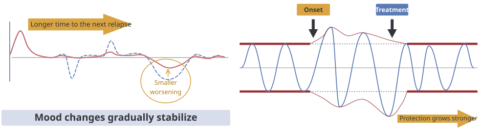
Even during medication treatment, you can relapse before the illness is sufficiently treated. However, if medication treatment is being done appropriately, the number, duration and severity of relapses decrease. In other words, even if you relapse, it is rare to get as bad as before, and if you deal with the relapse appropriately, the overall course of treatment may even improve. Rather than worrying about relapse, it is important to learn how to deal with it appropriately, and for this it is important to understand the prodromal symptoms of relapse (the early symptoms you notice before depression or mania/hypomania fully begins).
The prodromal symptoms of relapse differ from patient to patient. If you understand what your own prodromal symptoms of relapse are, you can quickly sense the risk of relapse, and by treating more actively during this period you can prevent the relapse. In particular, keeping your mood chart steadily is the best way to know the symptoms of relapse early and deal with them.
| Early symptoms of mania/hypomania | Early symptoms of depression |
|---|---|
|
|
⑤ Questions that may come up while you are taking medication
What is the best time to take medication?
Most of the medications used in psychiatry are fine to take on an empty stomach. Medications that tend to make you sleepy are mainly taken in the evening, and medications that have an effect of keeping you awake are taken in the morning. What matters is to take the medication regularly at a time that is convenient for you to remember, so that the level of medication in your blood stays constant. If your doctor has told you separately the time or way to take a medication, please keep to that. At times, if the nausea side effect is severe, taking the medication during a meal may make it much better.
Most medications are prescribed to be taken “before bed” so that they are easy to take. However, if your life is irregular and you have a habit of falling asleep late at night, it is better to take the medication at a set time (9–10 p.m.) rather than before falling asleep in the small hours, go to bed early, wake up early and get regular sleep.
When should I take medication if I work night shifts or travel abroad?
It is best to take the medication after you get home from work and before you sleep, but if your work hours switch between night and day, please talk with your doctor. In most cases, a before-bed medication can be taken before your longest sleep, regardless of the time. When traveling abroad, you can take the medication at a set time based on local time. For example, if you took your medication at 10 p.m. in Korea, take it at 10 p.m. local time abroad. In other special situations as well, please be sure to talk with your treating doctor.
What should I do if I miss the time to take my medication?
If you miss the time to take your medication, it is best to take it as soon as possible. Taking a medication that makes you sleepy when you go to work in the morning can be a problem, so you need to be educated about the basic characteristics of the medications you take.
What should I do about other medications while I am on medication treatment?
When several medications are used together, drug interactions can change the level of a medication, reducing its treatment effect or causing side effects. Cold medicines, painkillers and supplements taken for a short period are mostly not a big problem, but medication treatment can be done more appropriately only when your doctor knows which medications you use, so please tell your treating doctor what you are taking. Please also tell your doctor if you take herbal medicine.
Should I take my medication if I have been drinking alcohol?
Even if you drank alcohol before taking your medication, you should still take it. If you drank a lot, alcohol affects the level of the medication and drowsiness may appear more, but if you start skipping medication because you drank, treatment cannot succeed. You need to make an effort to stop drinking, or to drink less, so that you can take your medication.
What should I do if I run short of medication?
If you miss an outpatient appointment or lose your medication, and it is hard to book an appointment with your doctor, you should visit a nearby psychiatry clinic with your prescription, or quickly book an appointment with another doctor at Seoul National University Bundang Hospital, and get your medication prescribed. If you suddenly stop the medication, you may experience side effects. If you take a photo of your prescription in advance, it can help you get your medication prescribed at another hospital in such a case.
I am planning a pregnancy. Can I still take it?
Pregnancy and childbirth are periods when mood is highly variable because of physical and psychological changes, including hormones, so it is very important to try to become pregnant when your mood symptoms are stable. From the time you begin planning a pregnancy, discuss it with your doctor; depending on your symptoms, the medication may be stopped, or the dose may unavoidably be reduced with counseling therapy alongside, or it may be changed to a medication known to be safer. Also, if your mood symptoms are severe and taking the medication is safer for you and the baby, the medication may be continued after thorough discussion with you and your guardian. If you will prepare for pregnancy some day, above all, what matters is to receive good treatment now and create a stable state for the time of pregnancy. It also helps to supplement nutrients such as folic acid in advance, from the time you plan the pregnancy.
⑥ Some misconceptions and truths about medication treatment
| Q1. Can medication really fix the mind? |
|---|
| Medication can fix the mind, too. The body and the mind are closely connected. When the body is sick the mind has a hard time, and conversely, when the mind has a hard time the body is sick. A weakened mind always comes with changes in the brain. Changes in the brain can be restored with medication treatment. If you do not treat the changes in the brain, no matter how strongly you steel your mind, you cannot get over the illness well. |
| Q2. If the number of medications goes up, does that mean the illness is severe? If the types of medication increase, has the illness gotten worse? |
| Not necessarily. The number and dose of medications are mostly determined by differences in each person’s ability to metabolize medication. And the types of medication are decided by the characteristics of the illness. An increase in the number of types does not mean that the illness is more severe. It is not that having more medications makes it harder to stop them; rather, the medications cannot be reduced because the symptoms are not getting better. Adjusting the medications well and reducing the symptoms is the way to complete treatment well. |
| Q3. Won’t I still end up dependent on medication? |
| You do not become dependent on medication. If you recover from the illness with the help of medication treatment, you can do well even without medication. When the illness has not recovered sufficiently, you easily get worse again if you do not take your medication. So until you have recovered sufficiently, you simply choose to take it because it is needed. |
| Q4. If I take medication for a long time, won’t I become addicted? |
| Medications used for mood regulation are not addictive at all. They are not medications that are hard to stop. Among psychiatric medications, some of the class called tranquilizers can cause dependence, but if you follow your doctor’s prescription and use them carefully, you may be able to avoid becoming dependent. When the medication used for mood regulation is working effectively, you can use such tranquilizers only at the minimum dose or stop them. |
| Q5. If I take medication for a long time, will I get dementia or become less sharp? |
| Taking medication for a long time does not make you less sharp or turn you into a fool. It is the mood disorder that increases the risk of dementia, not the medication that brings on dementia. On the contrary, if a mood disorder is not treated well, the risk of dementia goes up. |
| Q6. Is there any benefit to taking medication for a long time? |
| There is, of course, a benefit to taking medication for a long time. Medication treatment has the effect of getting rid of symptoms, but it also has the effect of a protective shield that keeps symptoms from appearing even under fairly ordinary stress. The longer you take the medication, the stronger the protective shield becomes, and the nerve cells come to withstand stress well. |
2) Psychotherapy
You can also talk with your doctor outside of medication prescriptions, but combining counseling therapy regularly over a longer period can help treatment. There are various kinds of psychotherapy, such as psychoanalytic supportive therapy, cognitive behavioral therapy and relationship-focused psychotherapy. It is best to start psychotherapy after the acute-phase symptoms of the mood disorder have passed and symptoms have become stable to some extent, and if you would like to receive psychotherapy, it is good to talk with your doctor.
3) Mindfulness
Mindfulness is the practice of focusing on the present moment and accepting that moment as it is, without judging it. Mindfulness can be a great help in easing the stress, anxiety and depression we experience in everyday life. Read the mindfulness methods briefly introduced below and try practicing them. Mindfulness is one of the components of dialectical behavior therapy.
If you would like to know more about this treatment, you can buy the “Dialectical Behavior Therapy Workbook for Bipolar Disorder” online and read it carefully, which can be of great help.
<Mindfulness guidelines>
Choose something to focus on. Anything is fine. There are endless ways to practice mindfulness. It is best to start with something concrete at first. For example, listening to music or looking at a particular object is fine.
Other activities you can easily focus on: focusing on your breathing, listening to music, focusing on the sensation in a particular part of the body (for example, your feet touching the floor), watching a sunrise or sunset, reading a good book, talking with someone about a subject you like, spending time with children, grandchildren or nieces and nephews, playing with a pet, playing a musical instrument, walking, and so on
Then bring your attention to that object and begin to focus. If you chose to listen to music, press play and start listening. If you chose an object to look at, begin to observe it closely from every angle with curiosity, as if it were something you were seeing for the first time.
As you focus like that, notice when your attention becomes distracted and wanders. Remember that it is already expected for your attention to become distracted and for many thoughts to come up. The key is not to avoid becoming distracted but to notice it at some point. You may notice right away, or you may notice after a few minutes. No matter how long it took, just notice that it happened.
Gently return your attention to the object of focus. That is, do not blame yourself for not keeping your focus; simply turn your attention back toward the original object of focus. This is normal and an everyday occurrence. Keep repeating these guidelines. You may notice your attention wandering as many as 50 times in just one minute. Mindfulness is the practice of continuing to notice these things and simply bringing your mind gently back to the present moment.
There are two kinds of mindfulness practice. Both are very important. Informal practice means all the practice you can do while going about daily life; for example, practicing mindfulness while washing dishes, brushing your teeth or driving. Informal practice is woven into everyday activities and does not need time set aside on purpose. Formal practice means setting aside time to sit or lie down in a quiet place and practice mindfulness. Examples of such formal practice include thought-observation practice and progressive muscle relaxation. Practices such as breathing training can be both formal and informal.
8. Mood Disorders and the Circadian Rhythm
A rhythm that fluctuates over a cycle of one day is called a circadian rhythm, and many phenomena observed in our bodies, such as the sleep-wake cycle and changes in body temperature, have a circadian rhythm. In patients with mood disorders, the circadian rhythm often becomes irregular or delayed because they react sensitively to external stimuli. For example, melatonin, a hormone released from the body clock that regulates the sleep-wake cycle, is suppressed when light is bright, and patients with mood disorders have increased sensitivity to light, so even 1–2 minor events (such as looking at a smartphone until late at night) can quickly change the circadian rhythm.
In other words, our bodies need to stay consistent through the series of getting up, eating, exercising and being socially active, and sleeping; when life events such as irregular meals and sleep times pile up and the daily cycle and circadian rhythm change, you become vulnerable to stress, the range of mood changes widens, and this can trigger or worsen the symptoms of a mood disorder.
9. Lifestyle Habits for Overcoming a Mood Disorder
1) Healthy Lifestyle Checklist (see the last page of the book)
Half of treating a mood disorder is receiving medication treatment steadily, and the other half is properly keeping a regular lifestyle, exercise and stress management. If you take your medication well but do not keep up your lifestyle habits, or neglect your medication and only keep up your lifestyle habits, the illness cannot get better.
Once a month, let’s check whether you are keeping up good lifestyle habits by referring to the table on the last page. Based on what happened over the past month, answer the questions on the last page. Let’s check whether you reach 80 points or more. If you steadily keep your lifestyle habits so that you reach 80 points or more, the illness can gradually get better and the risk of relapse can be reduced.
2) Healthy lifestyle habits
① Sleep habits
Being active during the day and sleeping at night is best for our bodies. When your life rhythm is broken, it has a bad effect not only on your sleep habits but also on your mood. Patients with depressive symptoms often fall into a vicious cycle in which, to feel better, they go to sleep later and later, are tired in the morning and oversleep, and end up even more depressed. When you cut down on sleep, your mood seems to improve briefly the next day, but then the depression comes back for longer and the mood swings become more severe. And when your life rhythm is broken, you have difficulty at work and in social life, and symptoms often get worse. Because bad sleep habits make depressive symptoms worse, you must build the habit of going to bed early and getting up early.
<Sleep habits for a good night’s sleep>
(1) Eliminate time spent lying in bed not sleeping.
: Lying down for too long waiting for sleep, continuing to lie in bed after waking up, lying down to watch TV, look at a smartphone or read, or lying down to rest are habits that cost you the strength to sleep well at night.
(2) Get up at the same time every day.
Getting up at the same time every day is a great help in falling asleep at the same time. It is best to get up at the same time every day, even on days off and even on days when you are tired. If you set something to do outside at the same time every day (for example, around 10 a.m.), it is easier to keep your daily cycle. The amount of time a person can sleep in a day is fixed at 7–8 hours. If you get up late, naturally you can only go to sleep late. If you get up late, it is natural that you cannot sleep at night. To sleep well at night, you have to get up early.
(3) Naps are not good.
If you take one deep nap, you cannot sleep soundly at night. If you are so sleepy that you cannot stand it, set an alarm and sleep for no more than 20 minutes.
(4) Remove things that interfere with sleep from the bedroom.
The more you keep a clock in the bedroom and check it when you cannot sleep or when you wake up, the more you become fixated on sleep, which leads to insomnia. If you use a television, computer or smartphone in bed, light enters your eyes and your sleepiness goes away. Remove such electronic devices from the room, and keep your smartphone somewhere you cannot reach from the bed.
(5) Let go of your fixation on sleep.
If you try to sleep for many hours from the start, the time you spend lying down without sleeping increases, the time for sleeping becomes burdensome and frightening, and bad sleep habits increase. It is better to build up a time during which you can sleep naturally, even if it is short, and gradually extend that time.
(6) Create a comfortable sleep environment.
Make your sleeping environment quiet and dark. Keep it from being too hot or too cold. A warm bath before bed can help. Exercise regularly every day. However, exercising too much right before bed can interfere with sleep. Avoid drinks and foods that contain caffeine, such as coffee, green tea, black tea and chocolate. If you drink coffee, have just one weak cup in the morning. Do not go to bed hungry or too full. Avoid smoking and drinking alcohol before bed. Getting sunlight as soon as you get up in the morning is good. But at night, avoid being exposed to bright light. Set an alarm so that you can get up at a set time every day, and place it far away so that you cannot turn it off in your sleep.
② Alcohol
Alcohol weakens the regulating function of the mood regulation circuit in the brain and makes an unstable mood state even more unstable. When you are drunk, a depressed mood seems to improve, anxiety seems to ease, and you seem to be able to sleep, but when the alcohol wears off, you become even more depressed and anxious, and you wake up from sleep. Because alcohol is also harmful to the liver, it interferes with the metabolism of medication, and so it can also make medication treatment harder. It is extremely rare, and very difficult, for a patient with a mood disorder who has an unhealthy drinking habit to be cured while continuing to drink. That is why quitting alcohol is best for treating the illness. Even if you are in a situation where you cannot quit, you should drink as little as possible. Even if you drink little at a time, drinking often is just as much of a problem. In particular, people who, once they start drinking, keep drinking should quit alcohol altogether. Also, it is a mistake to think that because you can hold your drink, alcohol has little effect on your brain. No matter how effective medication treatment is, you must remember that treatment cannot work if you do something harmful to your body at the same time.
③ Exercise and outdoor activity
Exercise by itself prevents depression and prevents relapse of depression. In particular, seeing sunlight while exercising has a very large effect in treating mood disorders. No matter how severe your depressive symptoms are and even if you cannot do anything, try going outside every morning at 10 a.m. and seeing sunlight, even for a moment. When you feel a little better, try taking a 30-minute walk with your family or a pet dog. When you feel a little better still, try starting an exercise you used to like again, or take up the challenge of walking 10,000 steps a day. In particular, exercising and talking with close friends can be even more effective.
④ Eating habits
<Habits for weight control>
If you set a big goal from the start for weight control and lose weight too hard, it is difficult to succeed, you may regain the weight, and it can make your mood swings more severe. It is better to make the goal simply keeping up small habits, and lose weight little by little, steadily.
(1) Do not eat snacks. If you really want a snack in the early stage of weight control, it is better to eat a vegetable that is low in calories and filling, such as carrots, cucumbers or celery that you have prepared in advance. Rather than eating snacks, it is better to increase your set portion at meals.
(2) Eat set portions regularly at meals.
(3) Before meals, fill your stomach well with food that is high in fiber, filling and low in calories, such as salad. It is also a good habit to make all the salad you will eat for the day in the morning and fill your stomach well before meals. Make a variety of salads with vegetables, tomatoes, fruit (not too much sweet fruit), nuts, beans, tofu, chicken breast and so on, with low-calorie dressings such as balsamic, oriental, Italian or yuzu sauce. If you are not used to salad, eating leaf wraps with your meal or eating bibimbap with a lot of vegetables is also an option.
(4) After filling your stomach with salad before meals, cut carbohydrates (rice, noodles) to half of your usual amount.
(5) Do not eat sweet foods, sweet drinks, carbonated drinks, or instant mix coffee with sugar.
(6) Try keeping a food diary. You can make a notebook, or use a smartphone app. Just writing down what you eat can manage your diet and help you lose weight.
Eating habits are also best when regular. It is best to eat breakfast and eat a set amount at a set time. Even for people who are dieting to lose weight, skipping meals is not a good method. This is because irregular eating habits can make mood symptoms worse. A balanced diet is also important. You need to eat enough fresh fruit and vegetables. It is also important not to eat snacks before bed. When you become depressed, before bed you mostly eat foods high in carbohydrates, such as chocolate, snacks, rice, bread, pizza and instant noodles. In such cases, at the moment of eating you feel as if your mood improves and you calm down for a while, but in the end you become more depressed. Also, if you eat before bed, you gain weight, and the stress that comes from that can also build up. Let’s restore regular eating habits.
When there is a disorder of mood regulation, overeating and binge eating symptoms commonly arise, and an eating disorder often accompanies it. Overeating and binge eating are symptoms of the illness, so in severe cases they may not be controllable by your own will. In this case, overeating and binge eating symptoms improve only if you receive treatment. However, overeating and binge eating are also influenced, to some extent, by habit. So even while receiving treatment, making an effort yourself not to overeat or binge eat is an important part of treatment. Building regular, healthy eating habits, and not stocking your refrigerator with unhealthy foods that are easy to eat during depressed periods, are good habits for overcoming a mood disorder.
⑤ Things that make your mood better quickly and things that make your mood better gradually
Patients with mood disorders often look for things that quickly make their mood better in order to escape a depressed situation quickly. These include drinking, gambling, excessive planning or imagining, excessive investing, overspending, excessive activity, binge eating, self-harm, drug misuse, sleep deprivation and oversleeping. These seem to make your mood better for a moment, but they bring you back to the depressed place. By contrast, things that make your mood better gradually may take time, but they let you recover to a stable mood and keep that mood. Examples are regular lifestyle habits, walks, exercise, yoga, stretching, meditation, conversation, reading and realistic plans that do not overreach.
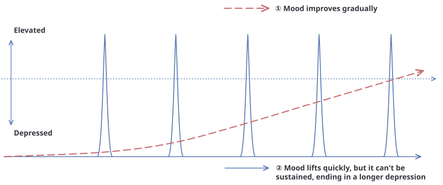
10. Symptoms That Can Accompany Mood Symptoms
1) The various symptoms seen in the course of bipolar disorder and bipolar spectrum disorder
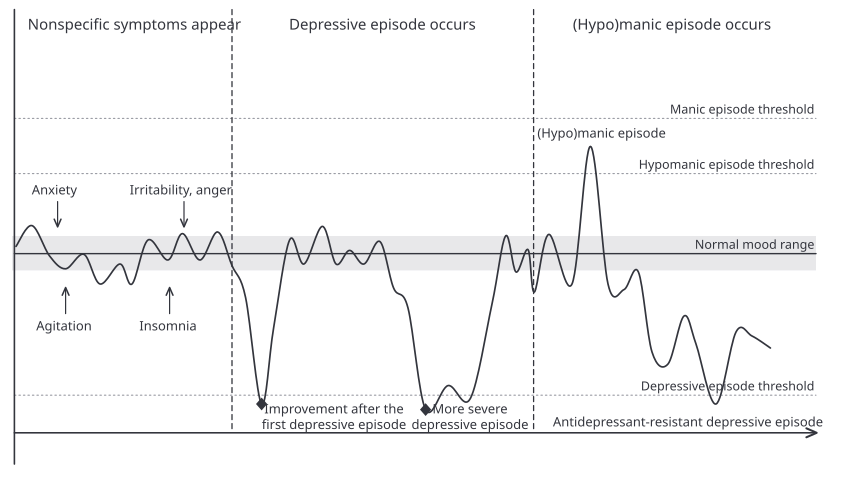
Unlike simple, typical depression, patients with bipolar disorder or bipolar spectrum disorder experience a variety of co-occurring conditions during the course of the illness. Even before the first depressive episode, symptoms such as anxiety, restlessness, irritability, anger and insomnia commonly appear, and it is not uncommon for people to be diagnosed with panic disorder, anger control disorder or insomnia during this period.
The first depressive episode may improve easily even with a small dose of antidepressant, but it soon relapses, and over time the response to antidepressants tends to decrease. After that, taking antidepressants, excessive effort to overcome depression, or a major stressful event may trigger the onset of (hypo)mania, and afterward some people experience depressive episodes in which antidepressants instead make the symptoms worse.
Over this course, various anxiety symptoms including panic attacks, alcohol dependence, self-harm, binge eating, reduced concentration and cognitive impairment may also accompany it, but at the root of it all is difficulty with mood regulation.
However, it is common for many patients to receive a diagnosis and inappropriate medication treatment focused on the outwardly visible symptoms rather than on the mood regulation problem itself, so that their symptoms instead get worse.
2) Panic attacks, hyperventilation, agoraphobia and social phobia
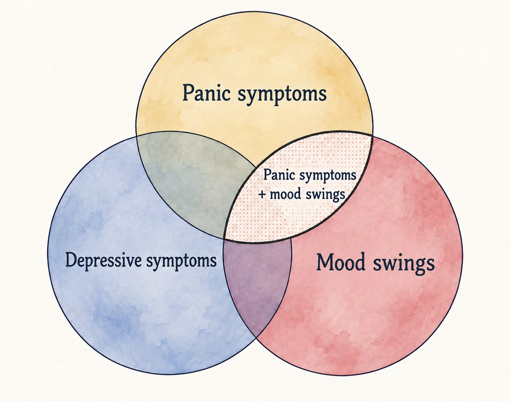
Quite a lot of people have both a mood disorder and panic disorder. Antidepressants are mainly used to treat panic disorder. However, when mood swings accompany it, unless the mood swings are treated first, panic symptoms improve temporarily but then get worse again, the symptoms drag on, or the person cannot stop taking tranquilizers and keeps taking them. That is why, when there are panic symptoms, instead of simply diagnosing panic disorder, it is necessary to look carefully at whether there is a co-existing mood disorder. It is true that a panic attack is a very painful symptom, but it is not a deadly illness the way it feels. When symptoms appear, do not panic; sit in a chair or lie on a bed in a comfortable position and breathe slowly and deeply. Taking the antianxiety medication you were prescribed can help the symptoms improve quickly. It also helps to reassure yourself, even with the symptoms, by saying ‘It will get better with time.’ The feeling that you cannot breathe during hyperventilation is not actually that you cannot breathe; it is because you are breathing too much, and the imbalance of electrolytes in the body makes the brain give the command to stop breathing, and that feels like you cannot breathe. Do not force yourself to breathe; try to slowly steady your breathing with the thought of breathing in for 5 seconds and out for 10 seconds. Once symptoms have started, it is hard to breathe slowly. It is important to practice breathing slowly in everyday life. Along with these panic symptoms, or without panic symptoms, there may be symptoms of fear of going out alone to places with many people, or of fear of giving a presentation or being the center of people’s attention. In such cases, they sometimes gradually improve as the mood disorder gets better, but counseling therapy such as cognitive behavioral therapy may also be needed. In everyday life, watch the video at the end of the http://snumood.com page and practice abdominal breathing and muscle relaxation.
3) Pain and physical symptoms
Psychological symptoms such as depression, anxiety and anger sometimes show up as various physical symptoms such as muscle pain and indigestion. When mood symptoms become stable through medication treatment, these physical symptoms often improve, but directly relaxing the body can also help. Regular exercise (stretching, yoga, Pilates, etc.), massage, abdominal breathing and biofeedback help, and in particular, for tension headaches caused by contraction of the scalp muscles (which appear as a feeling of pressure, tightness, or a feeling of weight pressing on the head or shoulders, a dull, continuous headache as if a band were wrapped around the head), directly relaxing the muscles helps relieve the symptoms. Try loosening the muscles around your head, neck and shoulders by hand or with tools (a neck pillow, massage ball, foam roller, acupressure tool, massager, etc.).
4) Binge eating
Medication side effects can make you crave food, but difficulty controlling appetite is also itself a symptom of a mood disorder. If a person with a mood disorder uses an appetite suppressant that is commonly prescribed and used, it can instead worsen mood swings and, in the end, make appetite control even harder. If you use an appetite suppressant, you must discuss it with your doctor and choose it together. Visiting the weight management program run by the Department of Family Medicine at Seoul National University Bundang Hospital is also a good idea.
5) Self-harm/suicidal urges
During depressive periods, urges to harm yourself or to die by suicide may accompany negative thoughts about the future, self-blame and a sense of worthlessness. Also, because of instability of emotions and behavior, there is a possibility of impulsively harming yourself or attempting suicide. In such cases, you must come to the outpatient clinic quickly or visit the emergency room to talk with the medical staff. If you come to the emergency room, you can meet a psychiatrist. When treated in the hospital, the medication can be adjusted every day, which can help you quickly find the right medication and quickly overcome the difficult period. Until you come to the hospital, guardians must remove dangerous objects (sharp knives, ropes, etc.), and rather than judging or taking any action about what the patient says or does, it is important to stay calmly by their side, listen to their story and empathize with how hard it has been. Also, patients receive immediate attention through self-harm and tend to harm themselves every time they want attention. Therefore, the way to help them move away from self-harm is to give attention consistently and to consistently show a calm, warm attitude.
6) Difficulty controlling impulses and anger
In hypomanic/manic episodes, the mood may become elevated or cheerful, but you also experience an irritable mood in which you become more irritable and get angry a lot, and you may actually throw or break things, or be violent toward family or friends, which can lead to legal problems. In everyday life, let’s practice checking how angry you are on a scale of 0 to 10. Let’s set the point at which you are angry and cannot control your emotions and behavior as 5, and when your score reaches 5 or more, let’s quickly get away from the person who made us angry, without thinking about anything else. It is said that the time it takes for anger to arise and peak is about 15 seconds, and once you get through those 15 seconds, the emotions subside and you can think rationally. Afterward, when the score is down to about 2, it is good to find peace of mind by quietly thinking about why you became angry. Then let’s try talking with the other person.
7) Problems with attention and concentration (adult ADHD symptoms)
Problems with attention and concentration are closely related to mood disorders. Many patients with mood disorders experience symptoms similar to attention-deficit/hyperactivity disorder (ADHD). However, it is not advisable to mistake reduced concentration caused by a mood disorder for ADHD and treat it with ADHD medication. In patients with a mood disorder, mood problems such as depression and anxiety need to be stabilized first. This is because, in an unstable mood state, ADHD medication treatment alone may have only a slight effect on improving concentration. Reduced cognitive function, lack of motivation and low energy caused by a mood disorder can be causes of attention and concentration problems. Therefore, only after your mood has been stabilized through treatment of the mood disorder can the remaining attention and concentration problems be evaluated. At that point, if attention deficit persists after a comprehensive evaluation, an ADHD diagnosis and medication treatment can be considered. Please keep in mind that if you mistake symptoms of a mood disorder for ADHD and take excessive medication, it can instead worsen mood swings.
8) Mood disorders and dementia
It is known that the risk of dementia is higher in people who go through repeated depressive episodes. It has not yet been clearly established whether depression itself causes dementia, but it is thought that when depressed periods get longer, activity level falls, unhealthy lifestyle habits increase, and mental activity also decreases, so the risk of dementia rises. Many patients mistakenly think “depression medication raises the risk of dementia” when in fact “depression itself raises the risk of dementia,” and make the mistake of stopping their medication on their own, which raises the risk of dementia even further. If mood disorder medication is taken properly, it prevents relapse of depression and can even help brain health. If you are worried about dementia, steadily follow the “Lifestyle habits to prevent dementia” below.
<Lifestyle habits to prevent dementia>
- (1) Make exercise that keeps your brain healthy part of your life: Do exercise that makes you short of breath and sweaty at least 3 times a week. Walk often. Exercise you can do when your joints are not good (swimming, cycling, pedalling your legs in the air while lying on your back, walking in water). When it is cold, dress warmly and go out to exercise without rushing. People who exercise every day can lower their dementia risk by 80%.
- (2) Make eating that keeps your brain healthy part of your life: Avoid sweet foods. Avoid instant mix coffee, misutgaru (roasted grain powder drink), sweet drinks and carbonated drinks. Eat fish, vegetables, fruit, milk and nuts. Drink enough water. Control your weight so that you do not become obese. Compared with those who prefer a vegetarian diet, those who prefer fatty meat have 3 times the dementia risk, and obese people have 1.8 times the risk of developing dementia compared with those of normal weight.
- (3) Manage diabetes, high blood pressure, high cholesterol and arrhythmia: You need to take the medication for these conditions steadily and well every day.
- (4) Be socially active in ways that support brain activity: Make many friends. See relatives and friends often, at least once a month. Living alone increases the possibility of dementia 1.5 times, and group activities lower the chance of dementia by 20%.
- (5) Study in ways that support brain activity: Read a lot. Read a book aloud for 20 minutes a day. Do arithmetic. Reading lowers the risk of cognitive impairment by 20%, and mental activity lowers the possibility of cognitive impairment by 30% or more
- (6) Quit smoking so that your brain does not get worse: Stay away from cigarettes and quit right now. Even if you smoked in the past, 6 years after quitting, your chance of getting dementia decreases by 41%.
- (7) Cut down on alcohol so that your brain does not get worse: Avoid heavy drinking. Heavy drinking damages the frontal lobe. You become an impulsive, quick-tempered and unplanned person
- (8) Take your mood disorder medication well. The more a mood disorder relapses, the more the risk of dementia can increase.